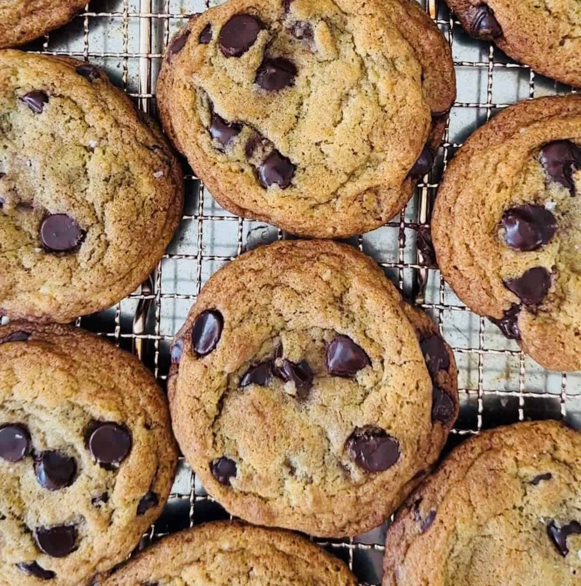

Oreo Truffles

- Get 1 regular pack of Oreos (~36 cookies) and 8 oz of cream cheese
- Blend up or smash oreos into a fine crumb
- Mix or beat Oreo crumbs wiht the cream cheese until combined
- Roll balls of the mixture and refridgerate for at least 1 hour
- Melt 12 oz of chocolate with 1/2 tsp of vegetable oil
- Let chocolate cool a little and dip oreo balls
- Refridgerate truffles for at least 1 hour
Chocolate Chip Cookies

- Combine 2 and 1/4 cups of flour, 1 tsp of baking soda and 1 tsp of salt in a bowl
- Beat 2 sticks of butter, 3/4 cup of brown sugar, 3/4 cup of granulated sugar and 1 tsp of
vanilla extract until creamy
- Add 2 eggs to the butter-sugar mixture 1 at a time
- Add in flour mixture
- Stir in ~2 cups of chocolate chips
- If the dough is soft, refridgerate for ~30 minutes
- Roll cookies and place onto a baking sheet
- Bake for 9 to 11 minutes or until golden brown at 375* F